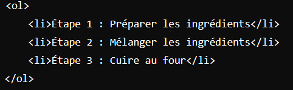
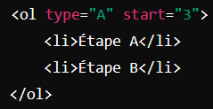
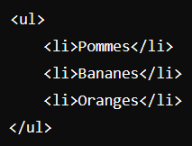

Qu'est-ce que le langage HTML?
HTML est l'acronyme de Hyper Text Markup Language c'est le langage de balisage
standard pour créer des pages Web il décrit la structure d'une page Web il se compose
d'une série d'éléments qui indiquent au navigateur comment afficher le contenu.
html les bases
Tous les documents HTML doivent commencer par une déclaration de type de document: ‹!DOCTYPE html›
Le document HTML lui-même commence par ‹html lang="fr"› et se termine par ‹/html›
‹title› pour le titre de la page donc de l'onglet et se termine par ‹/title›
La partie visible du document HTML est comprise entre ‹body› et ‹/body›
Le ‹head›L'élément contient des méta-informations sur le Page HTML
Les titres HTML sont définis avec ‹h1› à ‹h6›
‹h1› définit la rubrique la plus importante. ‹h6›définit le moins important Rubrique
Les paragraphes HTML sont définis avec le ‹p› et se termine par ‹/p›
Les liaisons HTML sont définies avec le ‹a href=""›et se termine par ‹/a›
Les images HTML sont définies avec le ‹img src="Le fichier source" alt="texte alternatif"›
Les commentaires HTML ne sont pas affichés dans le navigateur, mais ils peuvent Aidez à documenter votre code source HTML. Vous pouvez ajouter des commentaires
à votre source HTML en utilisant la syntaxe suivante : ‹!-- ici un commentaires --›
‹article›
L’élément ‹article› en HTML est utilisé pour structurer des contenus autonomes, c’est-à-dire des morceaux de
contenu qui peuvent être compris de façon indépendante. Voici un aperçu concret de son utilité et de ses particularités :
L’élément ‹article› représente un contenu qui pourrait être distribué ou partagé en dehors de son contexte actuel.
Typiquement, il est utilisé pour des éléments comme : Un post de blog Un article de presse
Une publication sur un forum Une fiche produit
Une entrée dans un réseau social
Pourquoi utiliser ‹article›
Accessibilité et SEO : Les moteurs de recherche et les lecteurs d’écran reconnaissent l’élément ‹article›, ce qui leur permet
de mieux interpréter le contenu de la page. Cela améliore la visibilité des pages dans les moteurs de recherche.
Structure sémantique : Utiliser ‹article› rend la structure HTML plus claire. Cela aide les développeurs, les moteurs de
recherche et les utilisateurs à comprendre la logique de la page.
N’utilisez pas ‹article› pour des éléments qui n'ont pas de sens en dehors de la page courante. Par exemple, une section de navigation ou un formulaire
de contact n’est pas un article ; ils sont propres à la structure de la page.
En résumé
l’élément ‹article› est un conteneur sémantique conçu pour structurer du contenu autonome et partageable. En l’utilisant,
vous améliorez l’organisation et la clarté de votre code HTML, ce qui bénéficie autant aux utilisateurs qu’aux moteurs de recherche.
La balise ‹main› en HTML est un élément sémantique introduit dans HTML5. Elle joue un rôle crucial dans la structuration d'une page web
en identifiant la partie principale de son contenu. Voici une vue d'ensemble détaillée et concrète de cette balise :
Définition de ‹main›
L’élément ‹main› est utilisé pour représenter le contenu principal d’un document. Cela inclut le contenu qui est directement lié
au sujet ou à la fonctionnalité de la page. Un document ne doit avoir qu’un seul élément ‹main›
Pourquoi utiliser ‹main› ?
Sémantique : L’utilisation de la balise ‹main› rend le document HTML plus compréhensible pour les développeurs et les moteurs de recherche,
en indiquant clairement où se trouve le contenu central de la page.
Accessibilité : Les technologies d’assistance, comme les lecteurs d’écran, peuvent facilement naviguer jusqu’à l’élément ‹main›,
permettant aux utilisateurs de se concentrer sur le contenu principal sans être distraits par les éléments de navigation ou les en-têtes.
Unicité : Un document HTML ne devrait contenir qu’un seul élément ‹main›
Placement : Bien que le ‹main› puisse apparaître n'importe où dans le ‹body›,
il doit généralement être situé après l'élément ‹header› et avant le ‹footer›
Quand éviter ‹main› ?
Contenus non principaux : N'utilisez pas ‹main› pour des éléments comme des barres de navigation, des pieds de page,
ou des sections latérales, car ces contenus ne constituent pas le cœur du document.
En résumé
L’élément ‹main› est essentiel pour indiquer clairement le contenu principal d’une page web. Il améliore l’accessibilité et la
sémantique du document, facilitant la compréhension et la navigation pour tous les utilisateurs, y compris ceux qui utilisent
des technologies d’assistance. En intégrant correctement ‹main› dans vos pages, vous contribuez à une meilleure structure et
à une expérience utilisateur optimisée.
Les balises ‹ol›, ‹ul›, et ‹li›
Les balises ‹ol›, ‹ul›, et
‹li› en HTML sont utilisées pour créer des listes structurées, permettant de
présenter des éléments de manière organisée. Chacune a une fonction précise dans l’organisation de listes numérotées ou non, et ces
balises sont essentielles pour structurer les informations de manière claire et lisible.
La balise ‹ol› : Liste ordonnée
>
La balise ‹ol› (Ordered List) est utilisée pour créer une liste ordonnée, c'est-à-dire une liste numérotée.
Par défaut, les éléments de cette liste seront numérotés de manière croissante (1, 2, 3, etc.).

Dans cet exemple, chaque étape est numérotée automatiquement, ce qui convient parfaitement aux instructions ou aux étapes d’un processus.
Attributs de ‹ol›
type : Permet de spécifier le type de numérotation (par exemple, type="A" pour des lettres majuscules)
start : Détermine le chiffre de départ de la liste (par exemple, start="5" commencera la liste à partir de 5).
reversed : Inverse l’ordre de la numérotation.

La balise ‹ul› : Liste non ordonnée
La balise ‹ul› (Unordered List) est utilisée pour créer une liste non ordonnée, c’est-à-dire une liste de points où l’ordre n’a pas d’importance.
Par défaut, chaque élément est précédé d’un point (ou d’un autre symbole, selon le style de la liste).

Ici, chaque fruit est un élément de la liste, sans ordre particulier, ce qui convient pour des listes où la priorité ou la séquence n’est pas essentielle.
Attributs de ‹ul›
type : Bien que l’attribut type soit obsolète dans HTML5 pour ‹ul›, on peut utiliser du CSS pour changer
le style des puces (comme des carrés, des cercles, etc.).
La balise ‹li› : Élément de liste
La balise ‹li› (List Item) représente un élément de liste, que ce soit dans une liste ordonnée
‹ol› ou non ordonnée ‹ul›. Elle est indispensable
pour définir chaque item d'une liste.
En résumé
‹ol› est utilisé pour les listes ordonnées (numérotées).
‹ul› est utilisé pour les listes non ordonnées (avec puces).
‹li› est utilisé pour chaque élément de liste dans ‹ol›
ou ‹ul›
En utilisant ces balises, vous pouvez structurer les informations en listes claires et logiques, améliorant ainsi la lisibilité et l’accessibilité de votre contenu.
Voir le code source HTML:
Cliquez sur CTRL et U dans une page HTML, Cela ouvrira un nouvel onglet contenant le code source HTML de la page.
Inspecter un élément HTML:
Faites un clic droit sur un élément (ou une zone vierge), et choisissez "Inspecter" pour voir quels éléments sont constitués (vous verrez les deux le HTML et le CSS).